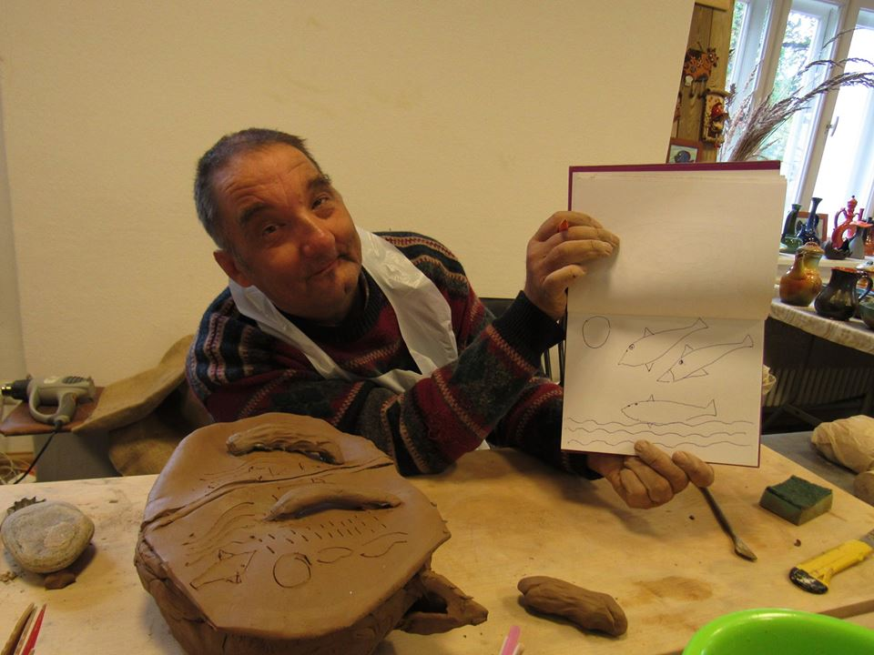

“Keramikas meistarnīca”
Pateicoties Ziedot.lv atbalstam veiksmīgi esam īstenojuši projektu “Keramikas meistarnīca”. Projekta ietvaros esam veikuši telpu labiekārtošanas darbus un pavadījuši trīs vērtīgas nodarbības pie pieredzējušiem meistariem keramikas darbnīcā Siguldā.
Saņemtais finansējums deva iespēju iegādāties darbnīcai nepieciešamo aprīkojumu: īpaši keramikas nodarbībām paredzētu galdu, apgaismes ķermeņus, keramikas instrumentus, kā arī veikt telpas kosmētisko remontu. Īpaši lepojamies ar to, ka remontu esam paveikuši paši saviem spēkiem, sadarbojoties gan darbiniekiem, gan dienas centra apmeklētājiem.
Keramikas meistaru Osvalda, Elizabetes un Gata vadībā esam apguvuši jaunas keramikas tehnikas un prasmes. Īpaši iepriecināja iespēja arī darbiniekiem izmēģināt sen kāroto – virpošanas procesu!
Projekta ietvaros projekta dalībniekiem bija iespēja padzīvot atsevišķi no ģimenes, pašiem uzņemoties atbildību par sadzīviskiem jautājumiem, tādā veidā attīstot svarīgas sociālās un patstāvīgas dzīves kompetences.
Esam priecīgi un pateicīgi par brīnišķīgo pieredzi!
Paldies projekta finasētājam, sirsnīgajiem meistariem Siguldas Pils Keramikas Darbnīca un naktsmāju saimniekiem Viesu Nams Vālodzes!
Projekts “Keramikas meistarnīca” tiek finansēts A/S “Latvijas valsts meži” Sociālās palīdzības programmas ietvaros, ko administrē Fonds Ziedot.lv.
Facebook fotoalbums:
https://www.facebook.com/pg/Biedr%C4%ABba-Gaismas-stars-1796158973957632/photos/?tab=album&album_id=2120504081523118
